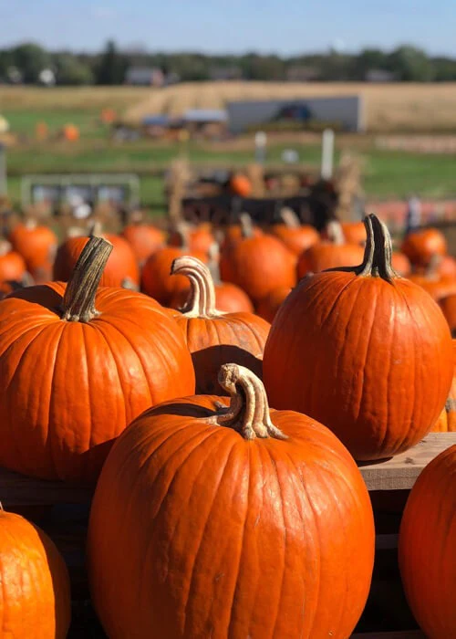

Fall consists of orange, brown, and red hughes — the colors of falling leaves, dead trees, and fire pits. There are not enough pumpkin patches to satisfy everyone, but enough halloween costumes to keep the holiday alive. It may seem like a family event, exclusive for little kids dressing up and carving pumpkins. But there's another option for college students and their friends: festivals. Fall is full of them, no matter how big or small the celebration may be. 
It might be that you take the weekend off to travel one or two hours for that perfect fall festival, or you might have a bonfire to start your own traditions. There are plenty of art festivals for all ages, pumpkin or food traditions, or music/entertainment at festivals meant for families. Either way, there's ways young adults can incorporate themselves in already-existing festivities with friends.
However, it's understandable if you don't want to spend your day next to screaming kids. The following links support unique fall festivals that you can enjoy by yourself or with friends: